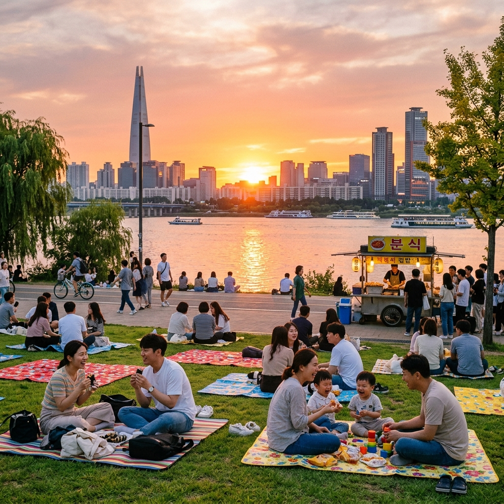
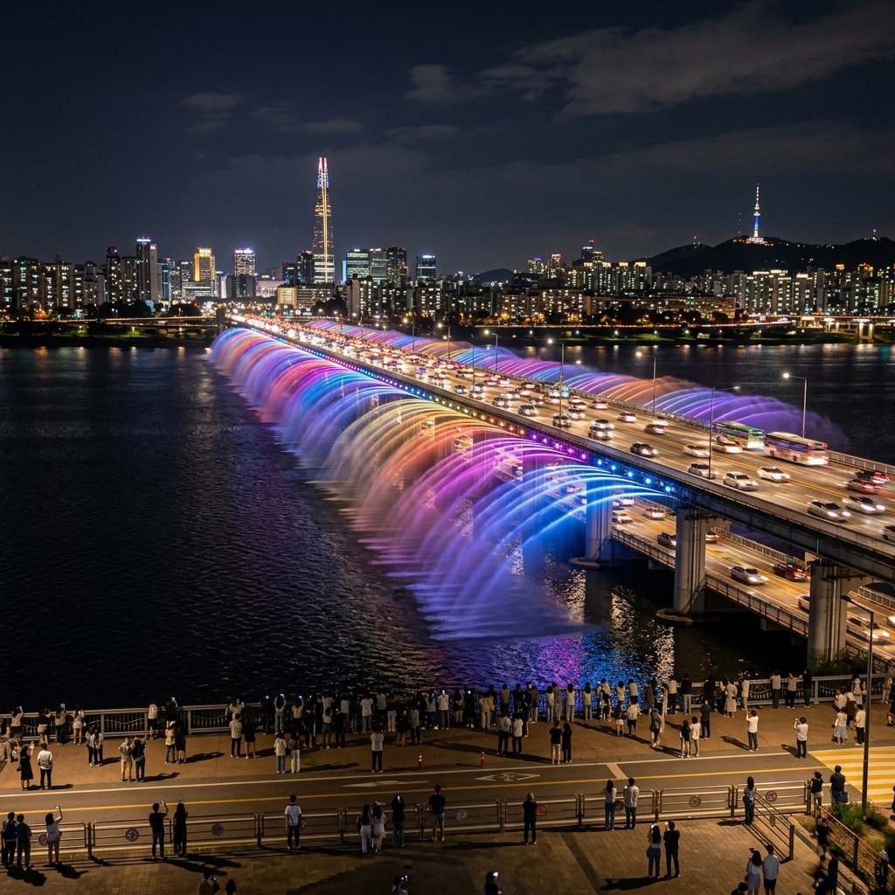
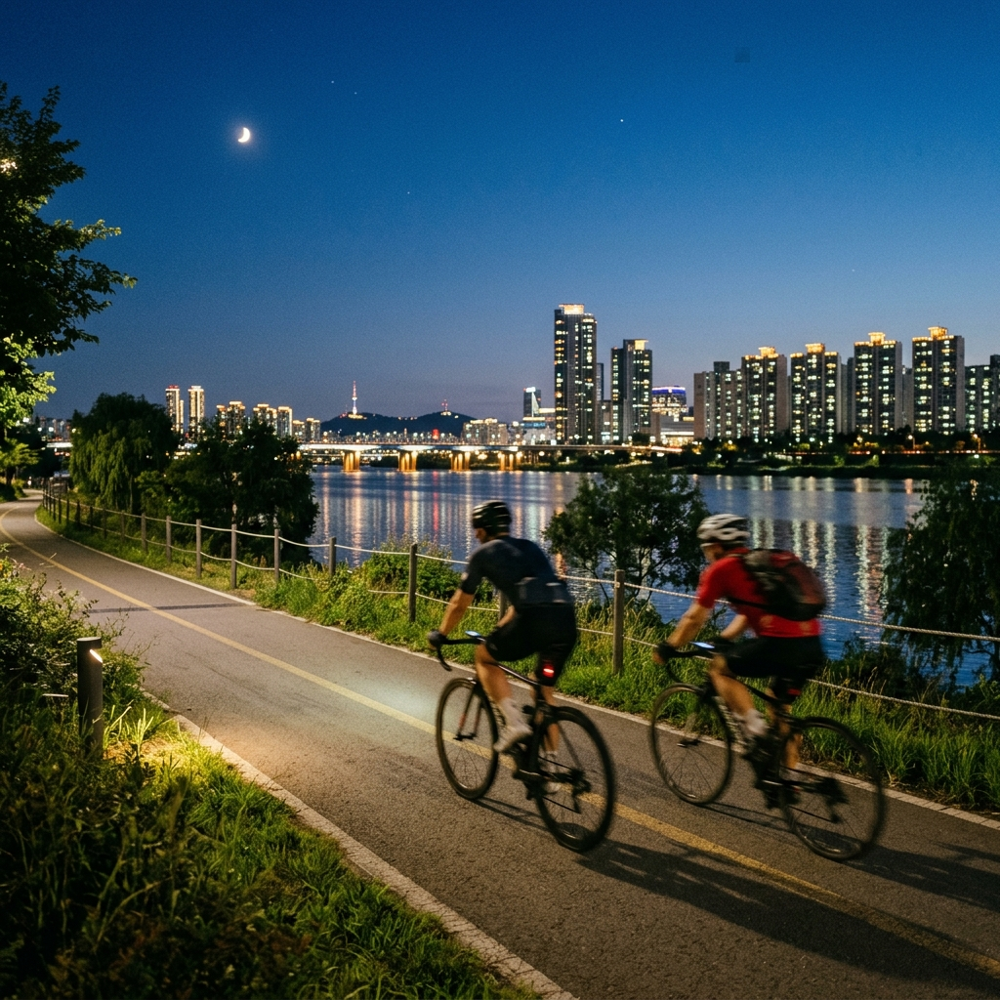

서울 한강 6월 노을 피크닉 — 뚝섬·반포·여의도 야간 명당 산책 코스
서울의 한강 공원은 6월이 되면 진정한 도심 피크닉 명소로 빛납니다. 일몰 시각이 오후 7시 50분 이후로 길어지면서 퇴근 후에도 여유롭게 노을을 즐길 수 있고, 장마 전 맑고 선선한 저녁 바람이 불어와 피크닉 분위기를 한껏 높여줍니다.
뚝섬·반포·여의도 세 공원은 각각 특색이 뚜렷한 한강 명소로, 수상스포츠·분수 쇼·자전거 코스 등 다채로운 즐길 거리를 제공합니다. 지하철로 손쉽게 접근할 수 있어 차 없이도 편하게 즐길 수 있다는 점도 큰 장점입니다.
01. 6월 한강이 특별한 이유
6월은 한강 공원이 가장 쾌적한 시기 중 하나입니다. 5월의 미세먼지가 잦아들고 본격적인 여름 무더위가 찾아오기 전, 맑고 따스하면서도 저녁에는 서늘한 강바람이 부는 한 달이기 때문입니다.
특히 6월에는 일몰이 늦어져 오후 8시 가까이 노을이 지며, 퇴근 후 저녁 7시에 공원에 나가도 황홀한 노을을 배경으로 피크닉 시간을 누릴 수 있습니다. 해가 지고 난 뒤의 야경도 빼어나, 낮과 밤 두 가지 한강의 얼굴을 한 번의 나들이로 즐길 수 있습니다.
장마가 본격 시작되는 6월 하순 전까지는 주말마다 나들이 인파로 붐비지만, 평일 저녁에는 상대적으로 여유 있습니다. 특히 주중 저녁 6~8시는 퇴근 후 가볍게 산책하며 한강 노을을 즐기기에 더없이 좋습니다.
02. 뚝섬한강공원 — 수상스포츠와 노을 명당
뚝섬한강공원은 성수동·건대 인근에 위치한 한강 공원으로, 2호선 뚝섬유원지역에서 도보 5분이면 닿습니다. 여름에는 수상스키·웨이크보드·카약·카누 등 다양한 수상스포츠 체험이 가능하고, 6월부터 예약을 시작하는 레저 프로그램이 많아 젊은 층에게 인기가 많습니다.
뚝섬 수영장과 자전거 대여소도 이 공원에 있으며, 한강 옆 소프트볼·농구·배구 코트에서 다양한 운동을 즐기는 사람들이 많습니다. 피크닉 명당은 뚝섬 전망문화복합시설(서울시에서 운영) 앞 잔디 광장으로, 넓은 잔디밭과 멋진 한강 조망이 어우러집니다.
저녁 노을 시간대에는 아차산 방향 서쪽 하늘이 붉게 물들면서 한강 수면과 함께 황금빛 파노라마를 연출합니다. 돗자리를 깔고 시원한 음료와 간식을 즐기며 이 풍경을 바라보는 것이야말로 서울 도심 생활의 특권입니다.

한강 공원 피크닉 노을 풍경 / AI 제작 이미지
03. 반포한강공원 — 달빛무지개분수와 야경 명소
반포한강공원은 반포대교 아래 위치하며, 세빛섬과 반포대교 달빛무지개분수로 유명합니다. 지하철 3·7·9호선 고속터미널역이나 9호선 신반포역에서 접근이 편리합니다.
달빛무지개분수는 반포대교 양쪽 난간에서 한강 수면으로 물을 뿜는 세계 최장 교량 분수입니다. 여름 야간(오후 8시~10시, 주말 기준)에 가동되며, 조명을 받은 물줄기가 무지갯빛으로 빛나는 광경은 서울에서만 볼 수 있는 특별한 야경입니다. 분수 정확한 운영 일정은 방문 전 서울시 한강사업본부에서 확인하세요.
세빛섬(플로팅아일랜드)은 한강 수면 위에 떠있는 독특한 건축 구조물로, 레스토랑·카페·전시 공간이 있습니다. 저녁에 조명이 켜지면 더욱 아름다운 야경을 만들어내며, 세빛섬 주변 잔디밭도 피크닉 명소로 사랑받습니다.
04. 여의도한강공원 — 봄꽃 이후 초여름의 여유
여의도한강공원은 봄에는 벚꽃으로 유명하지만, 6월에는 넓은 잔디밭과 시원한 강바람을 즐기며 여유로운 피크닉을 즐길 수 있는 공원입니다. 5호선 여의나루역에서 도보 5분으로 접근하기 쉽고, 넓은 면적 덕분에 사람이 많아도 비교적 여유 있는 자리를 찾을 수 있습니다.
여의도 공원 북쪽 강변에는 자전거 도로가 잘 닦여 있어, 자전거를 타며 마포대교에서 원효대교까지 시원하게 달릴 수 있습니다. 공원 내 자전거 대여소에서 일반 자전거와 전동 킥보드를 대여할 수 있습니다.
여의도 한강공원 인근에는 국회의사당과 한국거래소 등 주요 기관 건물들이 있어 야간 조명이 켜지면 독특한 도시 야경을 즐길 수 있습니다. 특히 날씨가 맑은 날 밤에는 한강 건너 관악산 실루엣까지 선명하게 보입니다.
05. 한강 피크닉 준비물 체크리스트
한강 피크닉을 제대로 즐기려면 몇 가지 준비물이 필요합니다. 가장 기본은 방수 돗자리입니다. 잔디밭의 풀물이 옷에 묻을 수 있으니 방수 처리된 돗자리를 사용하는 것이 좋습니다.
음식과 음료는 공원 입구 편의점에서 구매하거나 미리 집에서 준비해 오면 됩니다. 공원에서 직접 조리를 하는 것은 대부분의 공원 구역에서 금지되어 있으나, 음식 배달 앱을 이용해 피크닉 장소로 직접 배달받는 것은 가능합니다. 가스버너 사용은 지정된 바비큐 구역에서만 허용됩니다.
모기 기피제와 선크림도 필수입니다. 6월 저녁 한강변에는 모기가 활동하기 시작하므로 미리 대비하세요. 한강은 강바람이 불어 체감 온도가 낮을 수 있으니 얇은 겉옷 한 벌도 챙기는 것이 좋습니다.

반포대교 달빛무지개분수 야경 / AI 제작 이미지
06. 한강 야간 자전거 코스 — 서울숲에서 잠수교까지
한강 자전거 코스는 서울 도심에서 즐길 수 있는 최고의 야간 액티비티 중 하나입니다. 뚝섬에서 자전거를 빌려 성수대교 방향으로 나와, 서울숲 수변 구간 → 영동대교 → 청담대교 → 잠수교 방향으로 이어지는 약 12km 코스는 강변 야경을 만끽하며 달리기 좋습니다.
잠수교 아래에는 봄에 유명한 둔치 구간이 있으며, 6월에는 한강 수위가 낮아 탁 트인 풀밭과 함께 야경 사진 명소가 됩니다. 반포 세빛섬의 야간 조명을 자전거 위에서 가까이 지나칠 때의 감동은 말로 표현하기 어렵습니다.
자전거 대여는 따릉이(공공자전거) 앱이나 공원 내 민간 대여소를 이용할 수 있습니다. 야간 주행 시 라이트 장착은 안전 규정상 필수이며, 대여 자전거에는 기본 라이트가 달려 있습니다.
07. 한강 공원 먹거리와 편의시설
한강 공원 내 편의점(GS25, CU 등)에서는 도시락·라면·음료·아이스크림 등 기본 먹거리를 구입할 수 있습니다. 뚝섬과 반포 공원에는 카페와 패스트푸드 매장도 있어 다양한 선택이 가능합니다.
배달 음식을 이용한 피크닉도 한강의 새로운 문화로 자리잡았습니다. 배달 앱을 통해 공원 입구 픽업 주소로 주문하면, 치킨·피자·족발·보쌈 등 거의 모든 음식을 한강 잔디밭에서 즐길 수 있습니다. 다만 성수기 주말에는 배달 시간이 길어질 수 있습니다.
화장실은 각 공원 구역 내 여러 곳에 있으며 야간에도 개방됩니다. 자전거 수리 공간과 음수대도 주요 거점마다 설치되어 있어 장시간 체류에 불편함이 없습니다.
08. 6월 한강 행사·이벤트 안내
6월에는 한강 공원에서 다양한 행사가 열립니다. 서울시가 운영하는 한강 몽땅 여름축제는 매년 여름 시즌에 맞춰 6월 말~8월에 뚝섬·여의도·반포 공원에서 수상 레저·공연·야간 프로그램 등이 집중 운영됩니다.
2026년 한강 축제 및 행사 일정은 서울시 한강사업본부 공식 홈페이지(hangang.seoul.go.kr)에서 사전 확인하실 수 있습니다. 일부 인기 프로그램은 사전 예약이 필요하므로 미리 체크해 두는 것이 좋습니다.
6월 말에는 한강 인접 지역에서 소규모 문화 행사와 버스킹 공연도 자주 열립니다. 특히 주말 저녁 뚝섬·반포 공원 주변은 다양한 아티스트의 자유 공연을 즐길 수 있는 활기찬 분위기입니다.
09. 교통 접근 방법과 주차 안내
한강 공원은 지하철 접근이 매우 편리합니다. 뚝섬한강공원은 2호선 뚝섬유원지역 1번 출구에서 도보 5분, 반포한강공원은 3·7·9호선 고속터미널역 8번 출구에서 도보 10분, 여의도한강공원은 5호선 여의나루역 2번 출구에서 도보 5분입니다.
차량 이용 시 각 한강공원 인근 주차장을 이용할 수 있습니다. 주차 요금은 시간제로 운영되며 성수기 주말에는 주차 대기가 길어질 수 있습니다. 뚝섬 공원 주차장은 입구 바로 앞에 있어 접근이 편하지만, 주말 오후 2~6시 사이에는 만차가 잦습니다.
한강 공원은 자전거나 킥보드를 타고 접근하는 것도 좋습니다. 서울 시내 자전거 도로망이 한강 공원과 연결되어 있어, 인근 동네에서 자전거로 20~30분이면 충분히 도달할 수 있습니다.

한강 자전거 코스 저녁 풍경 / AI 제작 이미지
#한강피크닉
#뚝섬한강공원
#반포한강공원
#여의도한강공원
#한강노을
#달빛무지개분수
#6월나들이
#서울여행
#한강야경
#국내여행